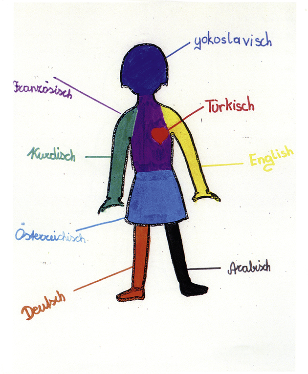
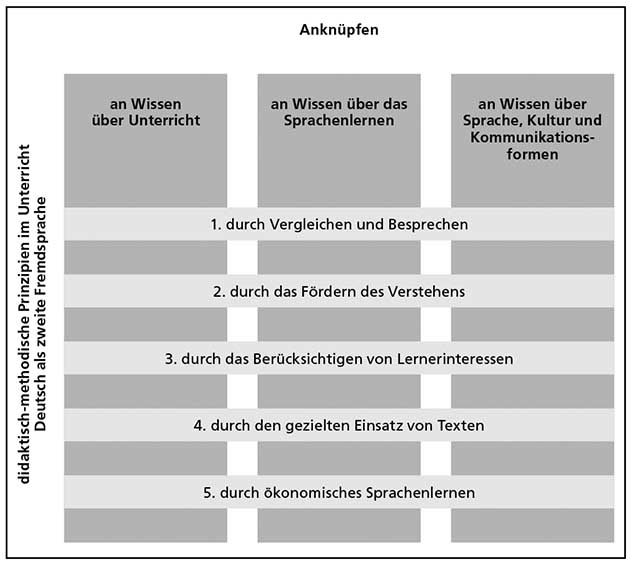
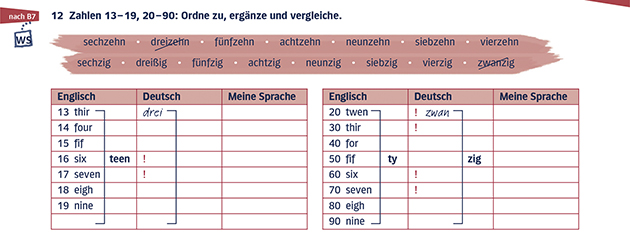

04 Wie helfen andere Sprachen beim Deutschlernen?
Im vierten Kapitel legen wir den Fokus ganz darauf, dass Deutsch für die meisten Lernenden nicht die erste, sondern bereits die zweite oder sogar dritte Fremdsprache ist. Wir zeigen, wie man die Verwandtschaft zwischen Sprachen zum Lernen nutzen kann und welche Möglichkeiten es darüber hinaus gibt, das Erlernen einer zweiten oder weiteren Fremdsprache zu erleichtern und die vorhandenen Potenziale der Lernenden zu nutzen. Hier führen wir didaktisch-methodische Prinzipien ein, die Ihnen beim Unterrichten von Deutsch als zweiter Fremdsprache Orientierung bieten und die wir mit konkreten Vorschlägen für Ihre Unterrichtspraxis veranschaulichen.
4.1 Einführung
In Kapitel 4 gehen wir jetzt der Frage nach, in welcher Weise andere Sprachen beim Deutschlernen helfen.
4.2 Welche Sprachen gibt es im Klassenzimmer?
Wir zeigen Ihnen zwei Beispiele dafür, wie vorhandene Sprachenkenntnisse ins Klassenzimmer geholt werden können. Das erste Beispiel ist die Arbeit mit sogenannten Sprachenporträts. Bei diesem Verfahren geht es darum, im Unterricht Sprachenporträts oder auch Sprachbiografien zu erarbeiten. Die Lernenden erhalten dafür eine Silhouette (…) mit der Arbeitsanweisung, alle “ihre” Sprachen dort hineinzumalen und dabei für jede Sprache eine andere Farbe zu benutzen.
 Dass Sprachen nicht isoliert nebeneinander existieren, sondern in einem dynamischen Kontakt zueinander stehen, beweisen die zahlreichen Fremdwörter und Lehnwörter (z.B. aus dem Bereich Sport: Jogging, Fitness, trainieren), die man bei einem Sprachvergleich finden kann. Sie finden hier als zweites Beispiel ein Lernmaterial, das man im Unterricht nutzen kann, um zu zeigen, dass Sprachen miteinander verwandt sind.
Wenn Lernende Lehnwörter aus der eigenen Sprache in einer Fremdsprache entdecken oder merken, dass sie z.B. aufgrund ihrer Deutschkenntnisse auch ein bisschen Niederländisch oder Dänisch verstehen können, wächst oftmals ihre Lernmotivation. Das Deutschlernen bekommt dadurch eine neue Dimension.
4.3 Welche Ähnlichkeiten und Unterschiede zwischen Sprachengibt es?
Um Übertragungsfehler zu vermeiden, müssen also bei einem kontrastiven Vorgehen neben den Ähnlichkeiten auch die Unterschiede aufgegriffen werden.
In diesem Teilkapitel lag der Fokus auf den Erfahrungen mit verschiedenen Sprachen, die Ihre Lernerinnen und Lerner bereits in den Unterricht mitbringen. Diese sollten in jedem Fall berücksichtigt und beim Lernen der neuen Sprache aktiviert werden. In einem ersten Schritt sollten Sie als Lehrkraft deshalb zunächst die sprachlichen Kenntnisse Ihrer Lernenden zum Thema machen (siehe Kapitel 4.2). Im weiteren Lernprozess ist es dann sinnvoll, die Ähnlichkeiten und Unterschiede zwischen den Sprachen kontinuierlich aufzugreifen, damit die Lernenden dazu angeregt werden, ihre sprachlichen Vorkenntnisse aktiv einzusetzen und sie für den erfolgreichen Erwerb des Deutschen zu nutzen.
4.4 Warum soll man das Vorwissen der Lernenden berücksichtigen?
Mehrsprachigkeitsdidaktik: Die zentralen Leitgedanken der Mehrsprachigkeitsdidaktik entsprechen den lerntheoretischen Erkenntnissen, die wir oben erläutert haben:
- Lernen wird als ein kognitiver Vorgang aufgefasst. Es wird viel Wert auf das bewusste Verarbeiten von Sprache gelegt.
- Neues Wissen wird ausgehend von bereits vorhandenem Wissen wahrgenommen bzw. mit diesem in Verbindung gebracht.
- Alle vorhandenen Sprachenkenntnisse (Erstsprache, alle Fremdsprachen) werden beim Erlernen der neuen FremdspracheNein passiv oder aktiv genutzt.
- Alle gelernten Sprachen, Sprachlernerfahrungen und Sprachlernstrategien werden miteinander vernetzt; es entsteht eine individuell ausgeprägte Mehrsprachigkeitskompetenz.
- Die Mehrsprachigkeitsdidaktik zielt auf ein ökonomisches Lernen ab: Sprachen sollen effizienter gelernt, bestehende kognitive Strukturen sollen genutzt und weiter ausgebaut werden. Aufgrund von vorhandenen Sprachenkenntnissen erreicht man einen schnelleren Lernfortschritt in einer neuen Fremdsprache.
Zwei fremdsprachendidaktische Entwicklungen, die dem Umstand entgegenkommen, dass Menschen in einer Gesellschaft mehrere Sprachen können müssen/wollen, stellen wir hier vor: die rezeptive Mehrsprachigkeit und die Tertiärsprachendidaktik. Die Förderung der rezeptiven Fertigkeiten, des Hör-, Lese- und Hör-/Sehverstehens, spielt in der Mehrsprachigkeitsdidaktik eine besondere Rolle. Nach kognitivistischen Erkenntnissen stellt die Rezeption ohnehin die Basis allen Lernens dar. Vor diesem Hintergrund konzentrieren sich viele der mehrsprachigkeitsdidaktischen Ansätze sogar ausschließlich auf das Verstehen von Sprache und erarbeiten Wege, wie Lernende nah miteinander verwandte Sprachen schnell hörend und lesend verstehen können.
Rezeptive Mehrsprachigkeit: Der Ansatz rezeptive Mehrsprachigkeit geht von Sprecherinnen und Sprechern verschiedener Sprachen aus, die miteinander kommunizieren, wobei jede/r ihre/seine Erstsprache benutzt. Dabei versteht jede/r grundsätzlich, was der Gesprächspartner sagt, ohne dessen Sprache selbst sprechen und schreiben zu können. Damit dieses Konzept Erfolg hat, müssen also beide Gesprächspartner die Sprache des anderen verstehen. In einem Unterricht, der auf rezeptive Mehrsprachigkeit abzielt, werden dementsprechend kommunikative Teilkompetenzen wie das Hör-/Sehverstehen und das Leseverstehen vermittelt.
Eine rezeptive Kompetenz kann man natürlich besonders rasch in solchen Sprachen entwickeln, die mit den bereits gelernten Sprachen nah verwandt sind. Wer Deutsch spricht, wird sich schnell einen Einstieg zum Schwedischen erarbeiten, wer Französisch beherrscht, wird auch andere romanische Sprachen schnell verstehen, Russisch kann als eine günstige Brückensprache für andere slawische Sprachen verwendet werden.
Tertiärsprachendidaktik: Da heute in vielen Fällen in der Schule Englisch als erste Fremdsprache gelernt wird, ist die Position der anderen Sprachen vorgegeben: Nach der Landessprache (die in den meisten Fällen auch die Schulsprache ist) und Englisch werden alle weiteren Sprachen als Tertiärsprachen oder Folgefremdsprachen gelernt. Die Begriffe bezeichnen die Position der jeweiligen Sprachen in der Erwerbsabfolge. Je nach Lernabfolge (Deutsch, Englisch, Fremdsprache II) emtwickelt die Tertiärsprachendidaktik didaktisch-methodische Prinzipien als Orientierung für die Gestaltung des Unterrichts.
Die Theorien sprechen für die Vernetzung der gelernten und neuen Sprachen, der Sprachlernerfahrungen und für die Bewusstmachung der Lernstrategien. Diese Erkenntnisse fließen in neue didaktische Ansätze ein. Die Ansätze der Mehrsprachigkeitsdidaktik zielen darauf ab, dass sich Menschen in mehreren Sprachen verständigen können, und setzen die bereits vorhandenen Sprachenkenntnisse und Sprachlernerfahrungen der Lernenden bewusst ein.
4.5 Wie knüpft man im Unterricht an vorhandene Kenntnisse an?
Im Tertiärsprachenunterricht können Lehrende also auf den vorhandenen Kenntnissen und Erfahrungen der Lernenden aufbauen. Wir sprechen in diesem Zusammenhang von Anknüpfen. Anknüpfen kann man beim Lernen einer zweiten Fremdsprache auf verschiedene Weise:
Anknüpfen an Wissen über Sprachunterricht: Lernende einer zweiten Fremdsprache können auch bereits auf eine Terminologie zurückgreifen, mit der sie über Sprache und ihre Phänomene sprechen. Es ist sinnvoll, die Terminologie zu verwenden, die den Lernenden aus dem Unterricht in anderen Sprachen bereits bekannt ist. Analog zu dem im Englischunterricht verwendeten grammatischen Terminus noun sollte im Deutschunterricht z.B. die Bezeichnung Nomen verwendet werden anstatt Substantiv oder Hauptwort.
Anknüpfen an Wissen über das eigene Sprachenlernen: Beim Erlernen ihrer ersten Fremdsprache haben die Schülerinnen und Schüler bereits Wissen über ihr eigenes Sprachenlernen erworben. Sie wissen, was sie gut können und welche Bedingungen beim Lernen erfüllt sein sollten, damit es gut funktioniert. Sie wissen auch, wie es sich anfühlt, fremd klingende Wörter auszusprechen, Fehler zu machen oder Wörter nicht zu finden. Der Unterricht in der Tertiärsprache sollte dieses Wissen in Erinnerung rufen und den Lernenden die Gelegenheit bieten, an erworbene Fähigkeiten anzuknüpfen.
Anknüpfen an Inhalte des Sprachunterrichts: Wenn Lernende Deutsch nach Englisch lernen, begegnen ihnen Inhalte aus ihrem ersten Fremdsprachenunterricht wieder. Auch im Deutschunterricht werden wieder sprachliche Strukturen und Regeln vorgestellt, die ihnen vielleicht zum Teil schon bekannt vorkommen; sprachliche Handlungsformen wie z.B. das Sich-Beschweren werden eingeübt, es werden bestimmte Textsorten geschrieben oder gesprochen, landeskundliche Themen bearbeitet und vieles mehr. An diese Inhalte des Sprachunterrichts kann man anknüpfen. (Sprachvergleich: Bsp. Parallelen in Grammatik und Wortschatz, kulturelles Wissen).
Aufgrund der Erfahrungen aus dem Unterricht der ersten Fremdsprache können also bereits erworbene Kenntnisse und Kompetenzen in den Erwerbsprozess der zweiten Sprache eingebracht werden. Es handelt sich dabei konkret um die Übertragung bzw. den Transfer von
- Wissen über Unterricht und wie Sprachenlernen im Unterricht abläuft,
- Wissen darüber, mit welchen Strategien man eine Fremdsprache lernen kann und wie man selbst gern lernt,
- Wissen über Sprache, über Kultur und Landeskunde sowie über Kommunikations- und Verhaltensformen.
Diese drei Ebenen des Transfers sind für den Vorgang des Anknüpfens grundlegend.
4.6 Wie vermittelt man Deutsch als zweite Fremdsprache?
Lernziele dieses Teilkapitels sind, dass Sie - didaktisch-methodische Prinzipien kennenlernen, nach denen Deutsch als zweite Fremdsprache unterrichtet wird, - die Umsetzung dieser Prinzipien in Lehr-/Lernmaterialien erkennen und einschätzen können, - Übungsformen kennenlernen, die Sie in Ihrem Unterricht von Deutsch als zweiter/weiterer Fremdsprache einsetzen können und die diese Prinzipien widerspiegeln.
Das so wichtige Anknüpfen an vorhandene Kenntnisse und Erfahrungen kann in Bezug auf die drei unten skizzierten Ebenen stattfinden. Diese drei Ebenen bilden auch den Hintergrund für fünf Prinzipien für den Unterricht von Deutsch als zweiter Fremdsprache, die die Tertiärsprachendidaktik als Leitlinien für sich aufgestellt hat (Neuner u.a. 2009). Die Prinzipien im Unterricht Deutsch als zweite Fremdsprache sind:
 ### 4.6.1 Prinzip vergleichen und besprechen
Dieses Prinzip zielt darauf ab, dass die Lernenden ihr Wissen über die Erst- und FremdspracheNein bewusst aktivieren, darüber im Unterricht sprechen und es zum Memorieren von neuem Wissen nutzen. In diesem Prozess können die Lehrkraft oder die Lernaktivitäten in den Lehrwerken die Lernenden unterstützen. Beispiel:

Im Beispiel bilden die englischen Zahlwörter die Basis dafür, dass die Lernenden die deutschen Zahlwörter ergänzen können; die Erstsprache der Lernenden kommt als Vergleichsgröße und Hilfe dazu. Die Ausrufezeichen in der Tabelle machen darauf aufmerksam, wo sich das Zahlwort in den zusammengesetzten Zahlen verändert, wo also erhöhte Aufmerksamkeit notwendig ist oder eine Lernschwierigkeit bestehen könnte.
Wichtig ist, dass das Besprechen und damit das Reflektieren nicht zu kurz kommt. Die Lernenden sollen sich bewusst machen, wie und was sie miteinander vergleichen und zu welchen Ergebnissen sie durch den Vergleich kommen. Dadurch kann man erreichen, dass die Lernenden nicht nur zu richtigen Lösungen kommen, sondern dass ihnen auch bewusst ist, wie sie zu der Lösung gekommen sind.
Das Prinzip vergleichen und besprechen macht die Lernenden zu aktiven Gestalterinnen und Gestaltern ihres eigenen Lernprozesses. Sie begeben sich auf die Suche nach sprachlichen Regelmäßigkeiten und setzen ihre eigenen Vorkenntnisse ein. Diese tragen zur Lösungsfindung bei und gewinnen somit auch an Wert. Das Sprachenlernen wird zum bewussten Prozess der Spracherkundung. Parallelen zwischen den Sprachen ermöglichen es, die bis dahin getrennt betrachteten Sprachen in einem Gesamtsystem zu verbinden.
Das Prinzip vergleichen und besprechen ist eines der wichtigsten Prinzipien der Tertiärsprachendidaktik. Es geht davon aus, dass das Sprachenlernen ein kognitiver Prozess ist. Die Sprachlernbewusstheit wird gefördert und das Gesamtnetz der Sprachenkenntnisse wird durch den kontinuierlichen sprachlichen, kulturellen und lernstrategischen Vergleich ständig erweitert.
4.6.2 Prinzip Verstehen fördern
Die Tertiärsprachendidaktik zielt darauf ab, dass Lernende möglichst früh viel vom sprachlichen Input verstehen können. Im Unterricht des Deutschen als zweiter Fremdsprache ist die Rezeption und das Verstehen von Äußerungen und Texten besonders wichtig.
Verstehensstrategien vermitteln: Aus Beobachtungen von Unterricht wissen wir, dass Lernende sich oft darauf konzentrieren, was sie noch nicht verstehen – sie versuchen die Texte Wort für Wort zu übersetzen, ärgern sich über ihre geringen Kenntnisse, werden schnell unkonzentriert und unmotiviert. Es ist wichtig, die Aufmerksamkeit vom Unbekannten auf das Bekannte, Verständliche zu lenken. Mithilfe effektiver Verstehensstrategien werden die Lernenden merken, dass sie das Wesentliche in Texten sehr schnell verstehen und die Aufgaben erfolgreich lösen können. Diese Verstehensstrategien müssen jedoch bewusst gemacht und besprochen werden, denn sie sind gerade schwächeren Lernenden oft nicht geläufig. Zu den Strategien beim Verstehen von Texten gehört z.B., dass Lernende auf die Bilder und Überschriften achten, die den Text umgeben, oder versuchen, Bedeutung über Internationalismen zu erfassen.
Der Einsatz von Verstehensstrategien (hier Leseverstehens-, Hörverstehens- und Textverstehensstrategien) hängt von den gewählten Texten und den Zielen ab, die beim Textverstehen erreicht werden sollen.
Da durch die umfangreicheren Vorkenntnisse im Tertiärsprachenunterricht insgesamt mehr und zügiger verstanden werden kann, ist es möglich, bereits früh mit authentischen Texten zu arbeiten. Der Fokus dieser Textarbeit liegt dann nicht darauf, den Text vollständig zu verstehen, sondern darauf, Verstehensstrategien bewusst einzusetzen und die Hauptinformationen global zu erfassen.
4.6.2 Prinzip Lernerinteressen berücksichtigen
Dieses Prinzip besagt, dass die Zielgruppe mit Inhalten und Lernaktivitäten arbeiten sollte, die auf ihre Bedürfnisse und Interessen abgestimmt sind. Die Zielgruppe, die Deutsch als zweite Fremdsprache lernt, kann sich in ihren Interessen und Lernbedürfnissen erheblich von den Lernenden einer ersten Fremdsprache unterscheiden.
Das Prinzip Lernerinteressen berücksichtigen oder auch Inhaltsorientierung bedeutet, dass Sie als Lehrkraft dafür sorgen, dass Ihre Lernenden Inhalte und Lernaktivitäten für sich als bedeutungsvoll erkennen, dass diese herausfordernd und sprachlich reichhaltig sind, dass sie die Lernenden aber nicht überfordern.